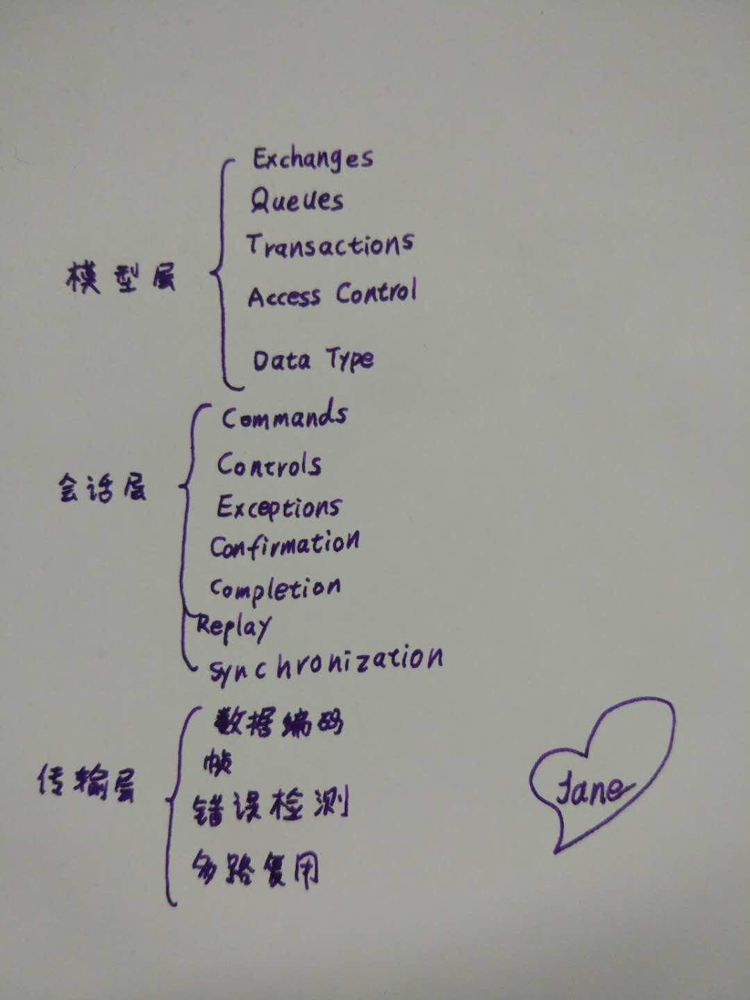

Travis
Friday, March 25, 2022
MQ
https://www.cnblogs.com/xiexj/p/7644999.html
Beanstalk 是一个高性能、轻量级的、分布式的、内存型的消息队列系统。最初设计的目的是想通过后台异步执行耗时的任务来降低高容量Web应用系统的页面访问延迟。其实Beanstalkd是典型的类Memcached设计，协议和使用方式都是同样的风格。其基本设计思想很简单：高性能离不开异步，异步离不开队列，而内部都是生产者-消费者模式的。
背景介绍：
现在市面上有很多消息队列系统了。常用的有ActiveMQ, RabbitMQ,ZeroMA,Kafka,RocketMQ。Redis之父最近又开源了一个Disque。我之前在乐视用的是apache的qpid。但是之所以各个系统都在流行，还要看其侧重点。
其中ActiveMQ可以称之为传统型，它们完全支持JMS和AMQP规范。
JMS即Java消息服务(Java Message Service)应用程序接口。它是Java平台上有关面向消息中间件（Message Oriented Middleware,缩写为MOM）的技术规范，它便于消息系统中的Java应用程序进行消息交换，并且通过提供标准的产生、发送、接收消息的接口简化企业应用的开发。(*我这里说了，JMS是应用程序接口，就是API，API就意味着是和编程语言绑定的)
JMS的体系架构由JMS提供者、JMS客户、JMS生产者、JMS消费者、JMS消息、JMS队列、JMS主题组成。
JMS对象模型包含：连接工厂、JMS连接、JMS会话、JMS目的、JMS生产者和消费者和JMS消息。其中大家最关心的是JMS消息的两种模型：点对点(point to point, queue)和发布/订阅(publish/subscribe, topic)。这两者之间的区别就是点对点模式是生产者发送一条消息到queue，一个queue可以有很多消费者，但是一个消息只能被一个消费者接收，当没有消费者可用时，这个消息会被保存直到有一个可用的消费者，所以queue实现了一个可靠的负载均衡。而发布订阅模式是发布者发送到topic的消息，只有订阅了topic的订阅者才会收到消息。topic实现了发布和订阅，当你发布一个消息，所有订阅这个topic的服务都能得到这个消息，所以从1到N个订阅者都能得到这个消息的拷贝。
AMQP(高级消息队列协议)，和JMS的区别在于：JMS只是java平台的方案，AMQP是一个跨语言的协议。由于跨语言的特点，降低了企业和系统集成的开销。所以现在的消息队列系统支持AMQP的多，支持JMS的少。
AMQP的特征是面向消息，队列化，消息模型（和JMS一样：点对点和发布订阅），可靠性和安全性。它提供了三种消息传递保证方式：最多一次，至少一次和精确一次。
我们经常在使用消息队列的时候提到的broker是对实现了AMQP协议的服务端的称呼。其基本结构如下图。

Beanstalk 介绍：
那下面开始说beanstalk了。首先说beanstalk其实并不是JMS规范的，也并不严格遵守AMQP协议。有人说Beanstalk之于RabbitMQ，就好比Nginx之于Apache。它更简单，轻量级，高性能，易使用。但是相比kafka，数据处理能力还是有差距，所以我们现在其实在逐渐替代它。但它有些很易用的特殊功能，后面会讲到。
Beanstalk 主要包括4个部分。
1> job:一个需要异步处理的任务，需要放在一个tube中。
2> tube:一个有名的任务队列，用来存储统一类型的job，是producer和consumer操作的对象。
3> producer:job的生产者，通过put命令来将一个job放到一个tube中。
4> consumer:job的消费者，通过reserve、release、bury、delete命令来获取job或改变job的状态。
刚才说Beanstalk有一些特殊的好用功能。那就是它支持任务优先级(priority)、延时(delay)、超时重发(time-to-run)和预留(buried)，能够很好的支持分布式的后台任务和定时任务处理。这些特性是和beanstalk工作过程密切相关。
Beanstalk的一个job的生命周期有READY、RESERVED、DELAYED、BURIED四种。
当producer直接put一个job时，job就是READY状态，等待consumer来处理。如果选择延迟put，job就先到DELAYED状态，到指定时间再READY。consumer获取了READY的job，此状态就为RESERVED。这样其他consumer不能再操作此job。当consumer完成该job后，可以选择delete、release或者bury。
delete之后，job不能再获取。release的job可以重新迁移或延迟迁移回READY。bury的job可以被休眠，需要的时候再READY或者delete掉。
Beanstalk使用场景：
用作延时队列：比如可以用于如果用户30分钟内不操作，任务关闭。
用作循环队列：用release命令可以循环执行任务，比如可以做负载均衡任务分发。
用作兜底机制：比如一个请求有失败的概率，可以用Beanstalk不断重试，设定超时时间，时间内尝试到成功为止。
用作定时任务：比如可以用于专门的后台任务。
用作异步操作：这是所有消息队列都最常用的，先将任务仍进去，顺序执行。